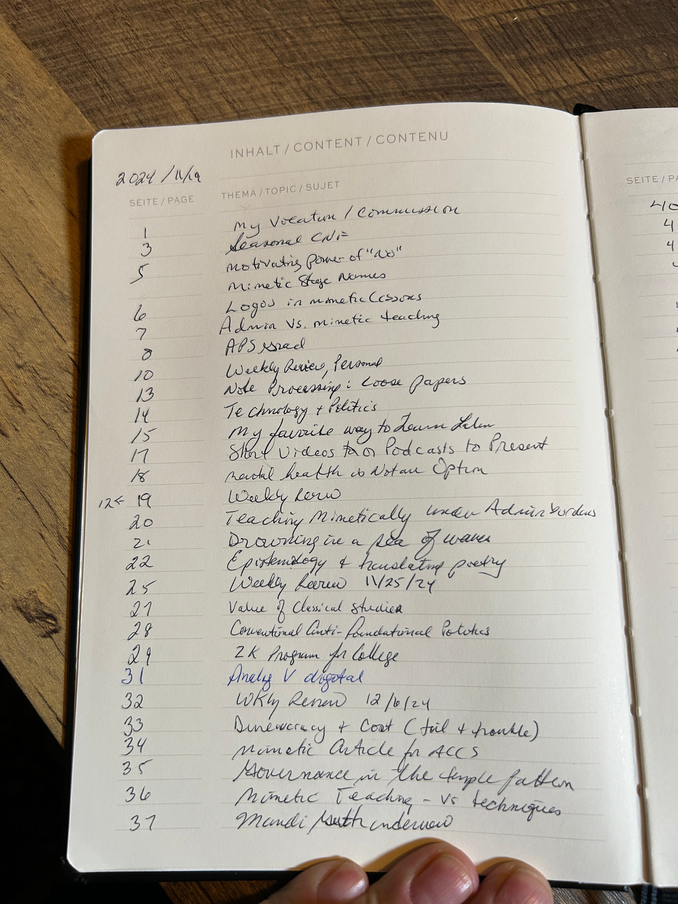
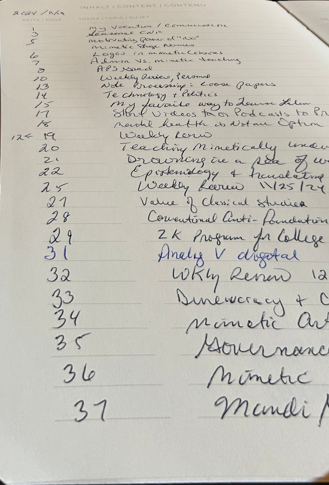

Author: Aarav Anand
Course: CS 566 (Fall 2025)
Photos of documents taken on phones are often skewed, shadowed, and difficult to read. The goal of this project is to automatically detect the document region in a natural image and correct the perspective so that it appears as a clean, top-down scanned page.
My approach uses a classical computer vision pipeline:
The implementation was done in Python using OpenCV. Below is a high-level overview of the main steps:
1. Read and preprocess the image 2. Apply adaptive thresholding 3. Use morphology to clean and enhance edges 4. Detect largest document-like contour 5. Order points 6. Compute homography and warp the image
Full code is available here: GitHub Repository
Below are sample before/after results:
Original Image:
Final Scanned Output:

Adaptive thresholding plus morphology performed far better than simple edge detection. Convex hull fallback significantly improved robustness on weak-edge images.
Click here to view the presentation